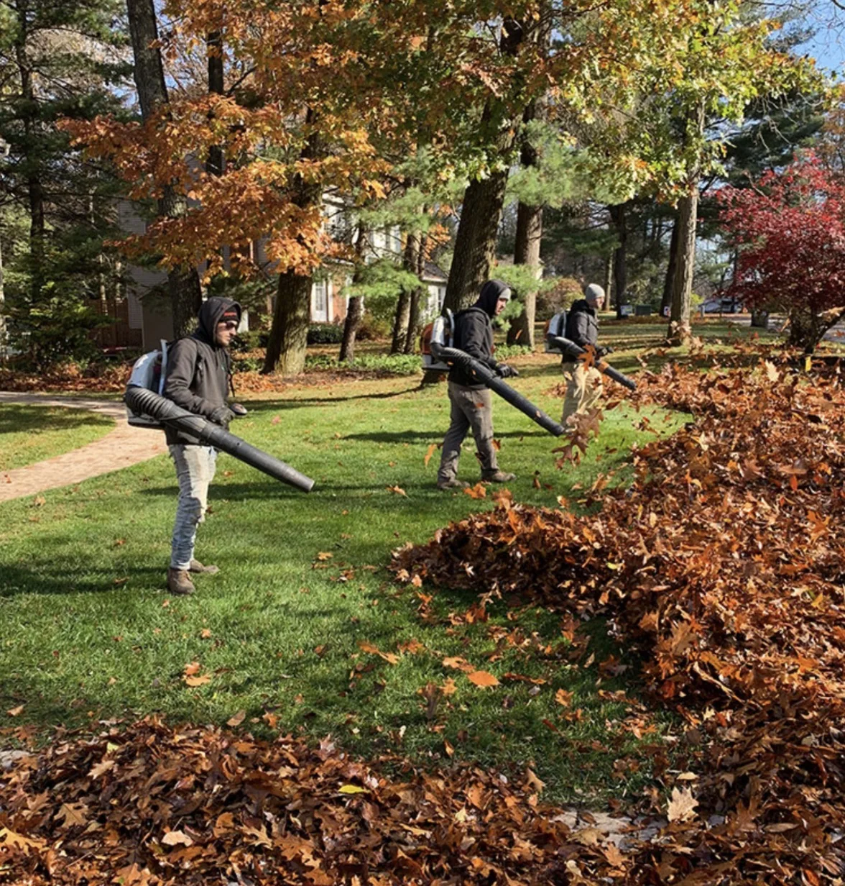
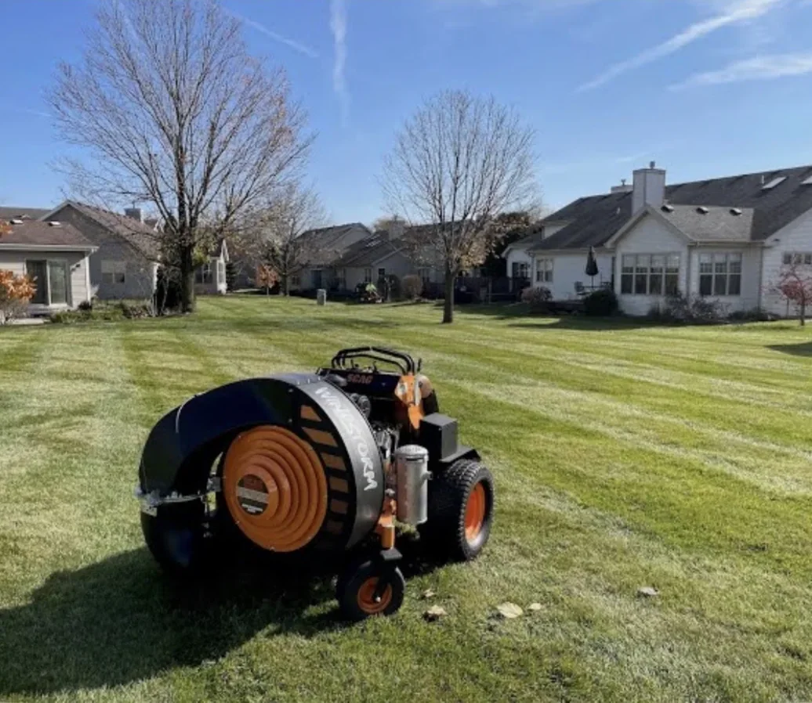
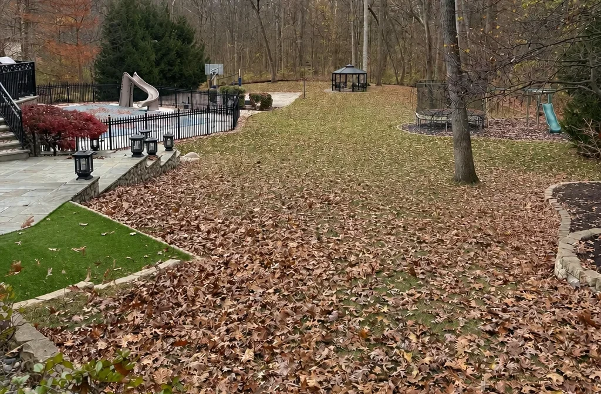
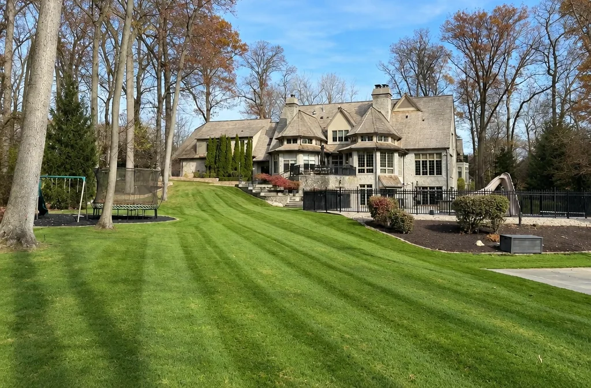
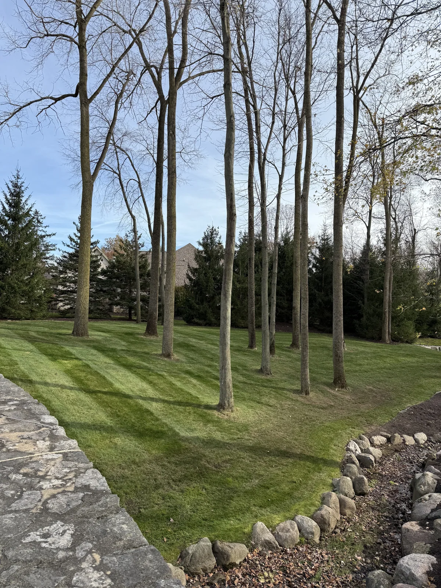
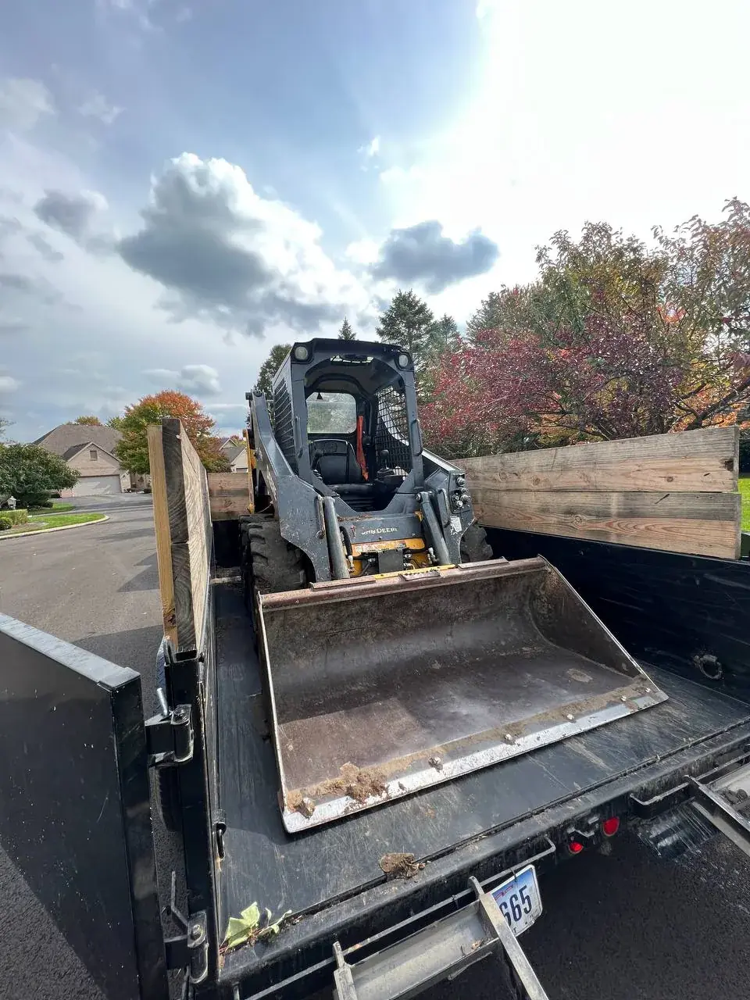

★★★★★
“We had a crew out to clean out some very overgrown and junk filled corners of the yard. They did great and were friendly and efficient. Would definitely hire them again.”Nat B
Great work at a fair price. They did what they said they were going to do, when they said they would do it.Richard Hansen
A lot of companies tell you what they are going to do. This company far exceeded their word.jon mercurio
Attention to detail was 2nd to none!Adam Raider
They did an excellent job and completed the same day. I would highly recommend them.Teresa Thompson
10/10 Company, the boys made my house look great. Customer Service is great, best deal on the market.Alejandro Urrea
Great work very accommodating and extremely professional will definitely have them do all my future work.Pete Detgen
Great, professional group of guys!Josh Johnson
They did a fantastic job for me. I will recommend them to colleagues.Dominic Urquiola
Fast and reliable. Ty did excellent work and very reasonable cost. I would not hesitate to suggest him to others.Larry Calcamuggio
Amazing service every time and prompt to all appointments.CJ Miller
Local details
A useful estimate accounts for local soil, drainage, access, neighborhood expectations, and how the property is actually used.
Plan the scope: Leaf Removal & Fall Cleanup · Fall Cleanup Checklist · Winter Sign-Up
Recent work






Questions homeowners ask
Answer first
A fall cleanup clears leaves from the lawn, the beds, the fence lines, and under the shrubs, cuts back spent perennials, lightly shapes shrubs, cleans up bed edges, and hauls all of it away. Commercial walk-behind blowers and backpack crews handle big wooded lots in one scheduled visit.
Holland details
Holland and Springfield Township mix suburban yards with high-visibility commercial corridors along Airport Highway, McCord Road, and Angola Road. A storefront or office bed full of leaves reads as neglected fast.
Terramorph clears lawns, beds, and fence lines and hauls the leaves off, for homes in Strawberry Acres and near Homecoming Park as well as business frontage that needs to look kept.
Wet lawn pockets and driveway runoff are common here. Leaves left in those low spots hold water and mat down, so the cleanup gets them out before the ground freezes.
Questions homeowners ask
Keep reading
What a Terramorph fall cleanup includes, the Northwest Ohio timeline, and what a good cleanup leaves alone.
Open page →Seasonal guideWhat to clear, cut back, and leave standing before winter.
Open page →Winter serviceBook winter service at the same time so the property is covered from leaf season into snow.
Open page →Perrysburg leaf removalLeaf removal and fall cleanup in Perrysburg, OH. Leaves blown out of lawns, beds, and fence lines and hauled off, no bags or tags. Perrysburg-based crew. Free estimates.
Open page →Maumee leaf removalLeaf removal in Maumee, OH. City curbside pickup is owner-occupied homes only; Terramorph hauls leaves for any property, rentals and businesses included. Free estimates.
Open page →Sylvania leaf removalLeaf removal and fall cleanup in Sylvania, OH. Mature-tree lots cleared, beds cut back, leaves hauled away. Downtown Sylvania, Olander Park, and nearby. Free estimates.
Open page →Free estimate
“We had a crew out to clean out some very overgrown and junk filled corners of the yard. They did great and were friendly and efficient. Would definitely hire them again.”Nat B
“The tree the guys at Terramorph took down was quite tall and located close to my pool. They removed the tree without dropping a ton of tree into my pool. I highly recommend this company and will use them again.”Jennifer Tierney
Free estimate
Send project details through the quote form, or call directly for urgent service questions and scheduling.
Call now or jump straight to the quote request form.